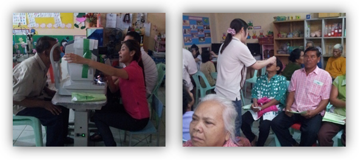
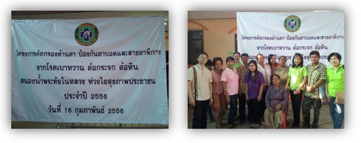
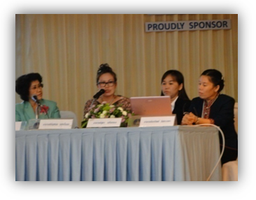
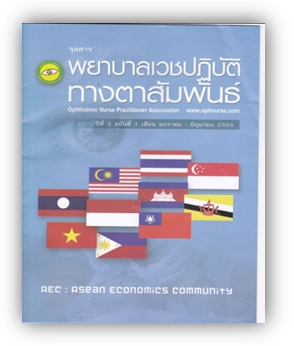
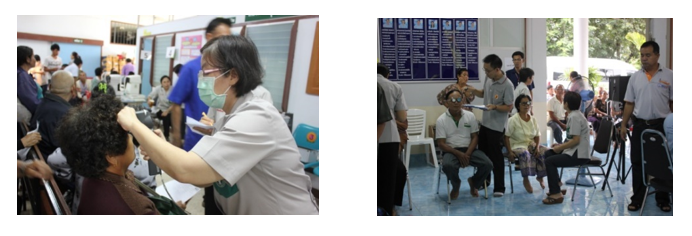
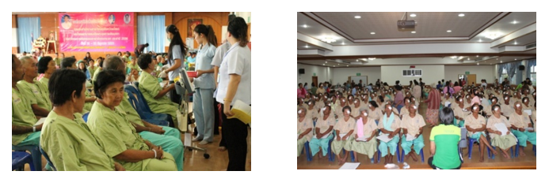
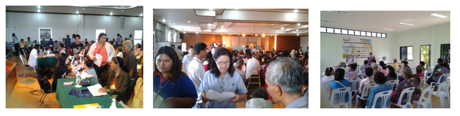
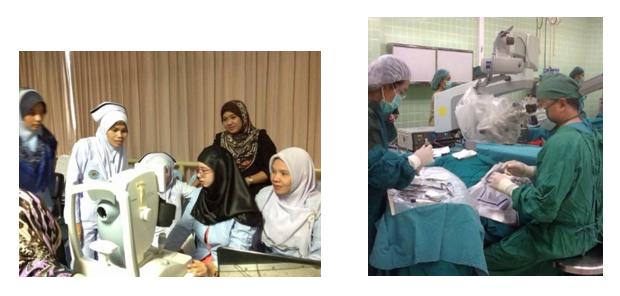

วันเสาร์ที่ 1 กุมภาพันธ์ 2557 โครงการป้องกันตาบอดและสายตาพิการจากโรคเบาหวาน องค์การบริหารส่วนตำบลโคก สลุง อำเภอพัฒนานิคม จังหวัดลพบุรี สมาคมพยาบาลเวชปฏิบัติทางตา ร่วมออกหน่วยตามโครงการป้องกันตาบอดและสายตาพิการจากโรคเบาหวาน, ต้อหิน, ต้อกระจก จำนวน 450 คน


วันที่16 กุมภาพันธ์ 2556 โครงการป้องกันตาบอดและสายตาพิการจากโรคเบาหวานและความดันโลหิตสูง สมาคมพยาบาลเวชปฏิบัติทางตาและองค์การบริหารส่วนตำบลโคกสลุง อำเภอพัฒนานิคม จังหวัดลพบุรี ร่วมออกหน่วยตามโครงการป้องกันตาบอดและสายตาพิการจากโรคเบาหวาน, ต้อหิน, ต้อกระจก จำนวน 400 คน เป็นโครงการตรวจต่อเนื่อง เพื่อ Follow up ทุกปี

วันที่ 7- 9 มีนาคม 2556 ประชุมฟื้นฟูวิชาการเชิงปฏิบัติการสำหรับพยาบาลเวชปฏิบัติทางตา ครั้งที่ 9 / 56 จัดโดยสมาคมพยาบาลเวชปฏิบัติทางตา ณ โรงแรมหัวหินแกรนด์ โฮเต็ลพลาซา จังหวัดประจวบคีรีขันธ์เป็นเวลา 3 วัน จำนวนผู้เข้าประชุม 250 คน เรื่อง “สมรรถนะของพยาบาลเวชปฏิบัติทางตากับการข้ามวัฒนธรรม” เนื้อหาการประชุมนำเสนอภาคบรรยายวิชาการ ที่พยาบาลเวชปฏิบัติทางตา ต้องทราบเกี่ยวกับการก้าวทันประชาคมอาเซียน การพัฒนาตนเองเกี่ยวกับทักษะภาษาอังกฤษด้วยวิธีธรรมชาติ เพื่อการเตรียมพร้อมเข้าสู่ประชาคมอาเซียน
- การเตรียมพร้อมเพื่อเข้าสู่ประชาคมอาเซียนของวิชาชีพพยาบาล,การนำเสนอบรรยายวิชาการเกี่ยวกับ ความคุ้มค่า คุ้มทุนเพื่อการป้องกันการเกิดโรคเบาหวานเข้าตาโดย วิทยากรชาวต่างประเทศ (อาจารย์ผู้เชี่ยวชาญจากมหาวิทยาลัย จูเทนโด ประเทศญี่ปุ่น) ฯลฯ
- การนำผู้เข้าประชุมทัศนศึกษาภูมิปัญญาชาวบ้านของชุมชน อำเภอหัวหิน จังหวัดประจวบคีรีขันธ์

มกราคม-มิถุนายน 2556 จัดทำจุลสารพยาบาลเวชปฏิบัติทางตาสัมพันธ์ ปีที่ 3 ฉบับที่ 1 เป็นการเตรียมพร้อมเข้าสู่ประชาคมอาเชียน แกะรอยพยาบาลเวชฯตาใน AEC เมื่อต้องดูแลสื่อสารกับผู้ป่วยประเทศเพื่อนบ้านที่มาป่วยและอยู่ในความดูแล

วันที่ 9 พฤศจิกายน 2556 ออกหน่วยคัดกรองผู้ป่วยต้อกระจกร่วมกับมูลนิธิแม่ฟ้าหลวง และมูลนิธิ พอสว. จังหวัดเชียงราย

โครงการคัดกรองและผ่าตัดต้อกระจก โรงพยาบาลเลิงนกทา จังหวัดยโสธร

โครงการคัดกรองผู้ป่วยต้อกระจก โรงพยาบาลเทพรัตน์ จังหวัดนครราชสีมา

โครงการคัดกรองและผ่าตัดต้อกระจก โรงพยาบาลสุไหงโกลก จังหวัดนราธิวาส